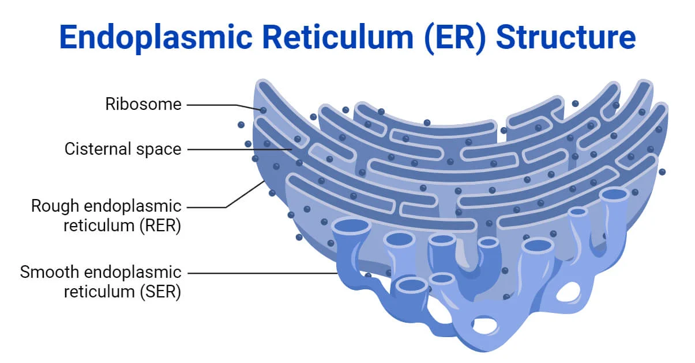
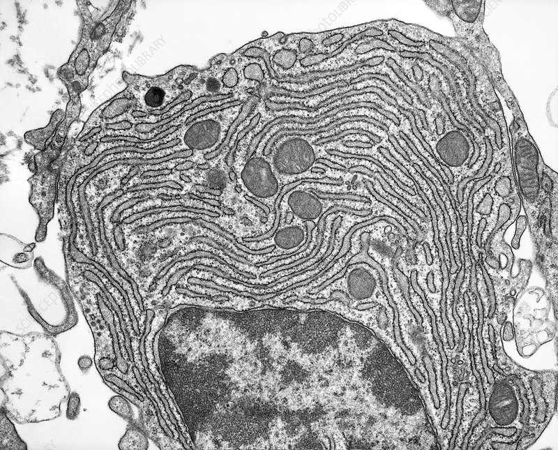

The Endoplasmic Reticulum, or Er, is a continuis membrane system found in eukaritoic cells, it has a pasta sheet like structure and surrounds the nucleus. There are 2 kinds of Er, the rough Er and the smooth Er, with the main difference between the two being that rough Er has ribosomes on it and smooth Er does not. Rough Er holds ribosomes on its surface and is responsible for protien synthesis while smooth Er is respondible for processing lipids.


Left: Diagram of the endoplasmic reticulum • Right: The endoplasmic reticulum under a microscope